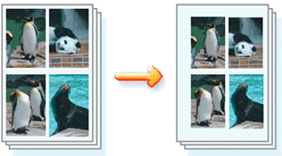
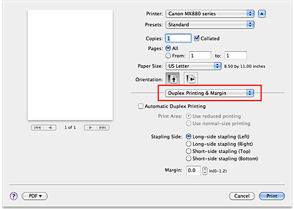

The procedure for setting the staple side and the margin width is as follows:
-
Select Duplex Printing & Margin from the pop-up menu on the Print Dialog
 -
Set the staple side and the margin width
Select a stapling position from the Stapling Side list, and if necessary, set the Margin width.
 Note
Note
-
The printer automatically reduces the print area depending on the staple position margin.
-
-
Complete the setup
Click Print.
When you execute print, the data is printed with the specified staple side and margin width.
 Important
Important
-
When borderless printing is enabled, Stapling Side and Margin appear grayed out and are unavailable.